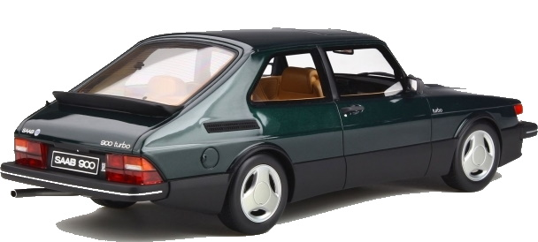

Tribute for Saab Automobile

Saab 900 turbo
Ten fun facts about SAAB
- The company was launched in the year 1945 and is headquartered in Trollhattan, Sweden. It came into existence when Saab AB, a Swedish aerospace & defense company started work on designing and producing small cars.
- The first production model car from this company was the Saab 92 and it was available to the masses in the year 1949.
- The car model that has been sold the most under the Saab banner is the Saab 900 and it remains to this day one of its best-selling cars.
- Saab has the honor of being bestowed by the Swedish Kind with the exclusive automobile Royal Warrant.
- As of 2008, Saab had its car production taking place in 3 nations and a little more than 90, 000 cars were produced.
- Saab as a car brand has been known as ‘The Well-Built Swede’ and ‘The Command Performance Car’.
- In the 1980s John Gardner James Bond novels, the Saab 900 Turbo was 007’s preferred vehicle and was also known as the ‘Silver Beast’ in the books.
- Saab cars are mostly sold in the territories of the United Kingdom, Sweden and the United States of America.
- Being extremely stringent with the safety measures, Saab subjects its cars to the famous elk test and keeps a careful record of all the accidents that their Saab vehicles have entered into globally.
- The year 1985 saw Saab try its hand at direct ignition, forgoing any issues with spark plug wires and other unneeded ignition mechanism.
Facts I used for this project where found here